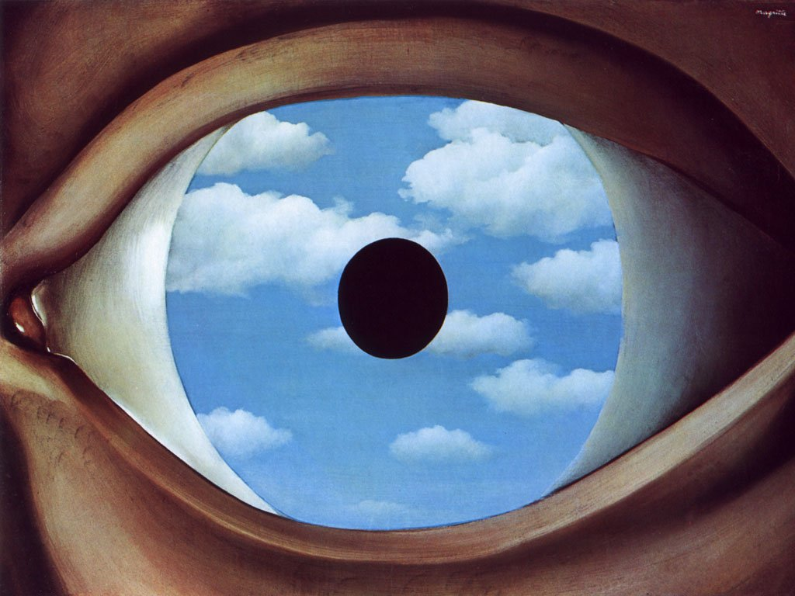

Narrative and Minimal Selves:
Towards Self Illusionism
My undergraduate thesis.
April 2021

The False Mirror, René Magritte (1928)
1. Introduction
Who am I? What, precisely, is this ‘I’ that I am referring to? The commonsense answer to such a question would be that I am a human being. I possess a particular set of physical characteristics, a particular set of beliefs, a particular set of values, and a personal history. Admittedly, all of these features change considerably over time. I share few physical characteristics, beliefs, and values with the person I was at age seven. However, despite this array of changes that has occurred over the course of my life, I have this deep sense that there is something “holding it all together,” so to speak, across the continuum of my life. There is this unshakeable attitude that we are metaphorical passengers in the vehicle of the body. Western philosophy, since the Greeks, has concerned itself intimately with this notion of self, with discussion of selves and souls appearing in works as early as Plato’s Phaedrus (Jowett). Similarly, Eastern traditions have also explored notions of the self. For instance, Lao Tzu in the Tao Te Ching proclaimed that “Knowing the self is enlightenment.” (Laozi 35) Various religions have understood there to be “souls,” which constitute this invariant, enduring selfhood or essence which persists throughout an individual’s life. This soul is sometimes understood to endure posthumously, which involves either reincarnation, wherein the soul begins to inhabit another being after death, or some notion of an afterlife in which the soul will dwell following the death of the corporeal body. These sorts of souls are thought to reside over and above the physical body of the individual, and are ontologically distinct, but embedded within a particular body for some period of time, constituting the person’s life.
The existence or non-existence of something like a soul is a theological, rather than philosophical question. In contemporary philosophical discussions surrounding the self, the discussion does not concern this ontologically distinct, substantive self which exists over and above the body. This substantive view poses a considerable epistemological challenge as to how one might understand or justify the existence of this ontologically distinct entity without invoking religious claims. Instead, the debate has narrowed and now involves an opposition between those who reject the notion of self and consider it illusory and those who seek to defend a “minimal” notion of self. The minimal self is understood to be both non-substantive as well as ontologically homogeneous with the flow of conscious experience.
In this paper, I will be putting forward a case for the self as an illusion. First, I will introduce several concepts which pertain to philosophical discussion surrounding the self. These concepts include the Buddhist notion of anattā, pre-reflective self-consciousness, the naive conception of self, and the intuitive sense of self. Following this, I will outline the primary views on the problem of self, including narrative models, no-self, and minimal self-realism. I will then outline the noteworthy objections to these positions and provide rebuttals to the objections to the no-self view. Finally, I put forward a positive view of what the self could be, argue why it is illusory, and conclude with potential implications of this position.
2: Key Concepts
The Buddhist notion of anattā
One of the central teachings of Buddhism is that the fixed, enduring, unchanging self, is illusory (Morris 51), which acts as a crucial starting point for many contemporary no-self views. This teaching is part of a larger Buddhist ontology, which postulates that no entities, events, or processes have substantial existence outside of dependent origination (Harvey 65). This dependent origination is a constant process by which all phenomena arise, exist, and pass away. A classic example to elucidate this idea is the notion of a chariot. We use the word “chariot” conventionally in language to refer to a particular kind of vehicle. However, in so doing, we are not referring to some chariot-essence existing independently of the individual physical components which make it up. Instead, we are using the term ‘chariot’ conventionally to refer to the continuity of its components in order to distinguish it from other amalgamations of components. The same is supposedly true of persons. We refer to people as ‘selves’ in a conventional manner, without appealing to some sort of permanent, unchanging essence which lies within them. Instead, we understand persons conventionally as a continuity of components. For instance, consider the claim that I am the same person I was when I was in the fourth grade. This is not because I share an enduring inner substance with this fourth grade child, but it is because that fourth grade child is uniquely continuous with the person I am now. That is, there is a chain of physical dependency whereby the fourth grade child can be understood as the same composite entity as the person I am now.
Pre-reflective self-consciousness
Minimal self realists often incorporate ideas from the phenomenological tradition in order to ground the self. In particular, Zahavi introduces the term pre-reflective self-consciousness to refer to an idea put forward by Husserl. In this subsection, I will be describing how this phenomenological term fits into consciousness to elucidate the starting point for the majority of minimal-self views.
A key notion in philosophical discussion surrounding consciousness is what is referred to as phenomenal character or quality of experience. This involves the sense that there is ‘something it is like’ to be in a conscious state, distinguishing conscious states from non-conscious states. For instance, there is something it is like for me to taste coffee, or to stub my toe, or to look at a Claude Monet painting. In contrast, there is nothing that it is like for the coffee in my mug to be hot, for the wall to be hit by my toe, or for the painting to be the arrangement of colours that it is.
Within this phenomenal experience which characterizes our space of consciousness, it has been proposed that there exists a structural feature of consciousness known as pre-reflective self-consciousness. In contrast to reflective self-consciousness, which is a higher-order process by which consciousness positions itself as an object of consciousness, pre-reflective self consciousness is a lower-level background process. This background process involves the conscious agent simultaneously attending to the objects of awareness as well as maintaining non-conceptual awareness of the conscious state itself. To illustrate this, consider the act of looking at a mug of coffee. While doing this, there is awareness of the mug, along with the phenomenal character of its properties as it presents to experience, in addition to the non-conceptual sense that one is looking at this mug from a perspective. This perspectivalness embedded within the relation between the vantage point of consciousness and the object of consciousness is what is understood as pre-reflective self-consciousness.
This pre-reflective self-consciousness is also linked to subjectivity and the sense of ownership one has with respect to conscious states. This ownership involves a sense of being the author of thoughts, the sensor of sensations, the hearer of sounds, the actor producing actions, and so on. There is a phenomenal sense of interiority, where all these experiences, thoughts, and feelings, are accessible to me and only me.
The naive conception of self
If one wishes to arrive at a coherent positive conception of self, this view must account for the common sense, ordinary understanding of self held by non-philosophers. A crucial reasoning strategy in the argument I will be putting forward involves appealing to this naive conception. In his paper, “Self-Awareness Without a Self,” Matthew Mackenzie provides a description of this naive sense of self:
Ask a layman what he thinks a self is, and his unreflecting answer will probably be that a person’s self is indeed some kind of real thing: a ghostly supervisor who lives inside his head, the thinker of his thoughts, the repository of his memories, the holder of his values, his conscious inner ‘I’. (Mackenzie 262)
This ordinary notion of self pertains to our philosophical discussion of self in an important way. As I will argue in a later section, if our minimal conception of self does not adequately mirror this ordinary conception in any meaningful way, this conception has no business being called a self. If the minimal understanding of self possesses none of the characteristics of the ordinary commonsensical understanding of self, this referent ought to be called something different.
Even if we grant that a coherent notion of self does not incorporate substantiveness and ontological uniqueness, this ordinary understanding still involves some necessary features, including diachronic unity and the capacity to be individuated. Diachronic unity is necessary, because we must account for the impression people have that their current self and their childhood self are fundamentally one and the same. In a fashion analogous to the Ship of Theseus thought experiment, the cells constituting the human body are constantly perishing and being reconstructed. Over time, every individual cell of the body will have been replaced within a human’s lifetime. Therefore, we must account for our intuition that the self is this unifying attribute, mediating the process by which we remain fundamentally the same person through the replacement of all physical components which constitute us.
We must also account for the capacity for the self to be individuated. A central aspect of our intuitions regarding the self is the notion that the self which I possess is fundamentally distinct from the selves which others possess. I am myself precisely in contrast to the selves which other people are. If there is no manner in which the self which I am can be individuated from the selves which other people are, this referent ceases to be a self at all.
The “sense” of self
Whether or not the self is illusory or real in a minimal fashion, it is undeniable that people tend to have a sense that it is real. This property of the self is something that must be accounted for in a coherent view of self. Prior to any philosophical reasoning, at a phenomenological level, a person understands their experiences as their experiences, and they understand themselves to be the authors of their thoughts and actions. Putting aside any related discussions surrounding free will and the authoring of decisions, the self seems to be an intrinsic element of our conscious experience. We often make normative and qualitative judgments about these selves which presumably exist when we make innocuous statements such as “I like chamomile tea” or “That person over there is greedy.” In contrast to descriptions of particular behaviors, such as the statement “That person was greedy for taking the last slice of pizza,” we often attribute these qualitative judgements to some invariant, enduring personality or character which the person to which we refer supposedly possesses.
The self seems to fall into a particular category of phenomena which might be characterized as involving problem intuitions. Later, I will show how the illusory view of self I am putting forward accounts for these problem intuitions. David Chalmers, in his paper, “The Meta-Problem of Consciousness” describes the notion of a problem intuition with respect to consciousness. A problem intuition involves the observation that ordinary people seem to have the intuition that consciousness is not reducible to physical processes (Chalmers 7), which can be called an intuitive dualism. Chalmers observes that it is quite easy to get non-philosophers to express confusion around consciousness and into accepting the notions that there is a hard problem of consciousness, consciousness might not be entirely physical, or that explaining behaviour does not explain consciousness (7). The facility with which one can accomplish such a puzzlement around consciousness implies there is a more fundamental intuition regarding these processes which is prior to the explicit language description. The self, along with this phenomenological quality of experience, involves a similar sort of tacitly accepted attitude. This is the attitude that the self exists as an enduring entity, as discussed previously. Any theory of the self, as with any theory of consciousness, must account for these emergent problem intuitions. Chalmers also specifically outlines four flavors of problem intuitions in the context of the hard problem, and three of these flavors can be equivalently substituted into the problem of the self. The first of these is the explanatory intuitions, which hold that there exists an explanatory gap which does not account for consciousness (12). In the context of the self, this can be understood as the self being a difficult phenomenon to explain, with a multiplicity of distinct ways it can be understood. The next is the metaphysical intuitions, which hold that consciousness is fundamentally non-physical (12). For the self, the metaphysical intuition holds that the self is also non-physical, existing as an ontologically distinct and substantive entity. Finally, there are knowledge intuitions, which hold that consciousness provides a special kind of first-person knowledge in the form of qualitative experience which is not accessible from a third-person perspective (12). The knowledge intuition of the self can be understood in a similar fashion, wherein the existence of the self allows for a special kind of self-knowledge which is not otherwise possible.
What is the reason behind the prevalent intuition that we have selves, and why does it emerge? I will proceed by outlining two accounts of this problem which will ultimately be incorporated into my view of the illusory self. Thomas Metzinger explores this intuition and attempts to account for why anti-realism with respect to the self is immediately counterintuitive. Metzinger argues that we construct mental models for a theory, argument, or belief which we encounter in the world, and an important feature of these mental models is that they possess a distinct and discernable phenomenology (Metzinger 287). That is, when we encounter an idea, theory, etc, the mental model we construct exists on a gradation of intuitiveness, with some ideas “feeling right” and others “feeling wrong.” Metzinger argues that this gradation of intuitiveness is based on a goodness of fit criterion with respect to our prior mental models of beliefs, theories, and so on (287). Depending on where a particular idea falls on this gradation, there is an energy cost associated with integrating this novel idea into our overarching mental model of reality. The less that this novel idea mirrors convictions we already hold, the more energy is required of us to integrate this idea.
With this understanding of intuition put forward, Metzinger applies it to our intuition regarding the self. Metzinger claims that when we attempt to consciously simulate a world in which the self does not exist, we inevitably generate a world which includes the familiar phenomenology we experience in our actual world, including a sense of agency, perspectivalness, and ultimately selfhood (288). In this way, we are fundamentally incapable of generating a representational simulation of the world in which the non-existence of the self can manifest phenomenologically. Metzinger goes on to argue that through evolution, we have developed a mistaken tendency to conflate phenomenological necessity with metaphysical necessity (289). That is, if we cannot phenomenologically conceive of something not existing, we interpret this as implying that it must necessarily exist. Metzinger points out that this conflation is mistaken, and that even if we do not have the capacity to consciously simulate a world in which there are no selves, this has absolutely no implication on whether these selves actually exist in a metaphysical sense (294).
Mackenzie also puts forward a view as to how this sense of self emerges. He claims that the root of the minimal sense of self is tied to bodily awareness resulting in an integrated experience of oneself in the world (Mackenzie 261). More sophisticated forms of the sense of self emerge at a reflective level, wherein one can interface with the self conceptually and one has the capacity to ascribe certain physical or psychological characteristics to the self (261). Mackenzie bifurcates this sophisticated sense of self into the autobiographical self and the contemplative self, which when taken together, is understood to drive the emergence of a robust sense of self. The autobiographical self, for Mackenzie, involves an understanding of ourselves as existing through time (261). The contemplative self, in contrast, has to do with a process by which we consider what kind of person we are, how we ought to act, and what values we hold (261). Mackenzie then describes how this sophisticated self model gives rise to the sense of self. When a particular state presents itself in the space of consciousness, and one possesses this sophisticated self model, the system represents this appearance of the mental state as presenting itself to the self (263), generating the apprehension that there is a concrete self or ego residing in the background of the stream of experience.
3: Views
Narrative models
Outside of the primary disagreement between minimal self and no-self positions, there is a parallel discussion occurring concerned with a view of the self involving narratives. Rather than searching for the self through a phenomenological route, it attempts to understand the self as a sort of fictional mental construction. This notion of the narrative self is often absent in arguments put forward by no-self and minimal self views, and I will later be synthesizing it with the no-self view.
Daniel Dennett put forward a seminal paper arguing for a narrative conception of self, “The Self as a Center of Narrative Gravity.” He draws an analogy between the self and the concept in physics known as the center of gravity. The center of gravity is an abstractum, in that it is not a physical item and does not possess any physical properties aside from spatio-temporal location (Dennett 103). Despite these constraints, the concept itself remains to be useful for physicists making predictions. Dennett’s conception of the self mirrors this notion of the center of gravity, considering the self an abstractum which allows us to interpret the complex entities that humans are (105). When generating the sense of self subjectively, we are engaging in a process of constructing a loose narrative surrounding our personal history, incorporating our experiences, certain characteristics, some notion of personality, and so on. This also mirrors the prevailing idea in psychology that memory is a reconstructive process whereby we actively rebuild memories from the ground up in any instance where we engage in memory recall. The self understood as a narrative is continuously undergoing adjustments and having addendums piled on as we continue through our lives and accrue more experiences, more beliefs, different values, and so on.
This view of self is explicitly non-substantive and in no way exists ontologically separate to any stream of consciousness. This fictional narrative view instead understands the self as an ephemeral collection of pieces of information which are in a constant state of flux. The self exists only in the space of consciousness of people who are directly interfacing with these abstract collections of information, in the same way the center of gravity does not exist as an external physical object, and exists only as an abstractum in the space of consciousness of theorists making predictions about concrete, external physical objects.
An important consideration with respect to this position on the self is how it seems to possess many of the characteristics of the naive conception of self. Diachronic unity is maintained for the narrative view, because although the abstractum is changing considerably over time, it is easy to trace the adjustments which have occurred to it and grasp the sense in which it is fundamentally the same abstractum which existed in the past. For instance, consider the notion that I am fundamentally the same person I was when I was at age seven. In this view, I can trace the personal history which has occurred since that period in my life, which reveals a chain of events connecting that seven year old child to the person I am now.
As for the capacity to be individuated, this position on the self also holds up. In order to individuate the narrative self which I am from the narrative selves which other people are, I can simply point to the narratives themselves. My narrative self is distinct from those which possess the characteristic “grew up in Spain,” because my personal narrative self model contains the characteristic “grew up in Canada,” and I can therefore discriminate between them through a process of identifying discrepancies. This process of identifying discrepancies can continue to the point at which the narrative self which I am possesses some set of characteristics which are possessed by no other narrative self, and therefore achieve full individuation.
Joel Krueger, in his paper “The Who and the How of Experience,” also discusses this narrative model. He points out that an important aspect of this view is that these narrative constructions are essentially embedded within a network of pre-existing narratives present in the society and culture the individual in question happens to find themselves in (Krueger 38). Additionally, Krueger draws a distinction between two flavors of the narrative view: narrative enhancement account, and narrative constitution account. The narrative enhancement account postulates that some subset of the aspects of self are enhanced or can be explained by narratives (36). In contrast, the stronger narrative constitution account postulates that the self is entirely constituted by narratives (36). Krueger argues that the narrative constitution account, which he notes is the view held by Dennett, is not adequate in terms of creating a coherent view of the self, and merely acts as an explanatory device concerning persons rather than selves (39). For Krueger, the space of pre-narrative experience provides the structure for narrative models, as well as allowing for content to be attributed to these narrative models (43). I will return to this notion of the conjunction of the minimal self and the narrative model in a later section.
No-self
To set up the context for the view of illusory self I am putting forward, I will now describe a number of no-self views that have already been articulated. Although the underlying claim is entirely homogeneous among philosophers who argue for a no-self view (i.e. that the self does not exist), the route taken to arrive at this conclusion varies among the individual thinkers. For instance, Albahari, in her book, “The Two-Tiered Illusion of Self,” adopts a Buddhist angle with respect to the self in order to argue for its illusory nature. Albarari is arguing against the usual assumption that we are a unified, perpetually persisting, ontologically distinct self, who owns experiences, thinks thoughts, and is the agent of actions. An important distinction Albahari makes is between the self and the subject. The subject, or witness consciousness, is understood as the process of conscious witnessing, which is an invariant property of perception, observation, and attention that is always present in all instances of conscious experience (Albahari 8). This subjectivity possesses the characteristics of elusiveness, unbrokenness, and invariability. However, Albahari argues, through the structure of consciousness, these characteristics of the witnessing consciousness are mistakenly attributed to the self (205).
Albahari creates a model of a bifurcated self to account for how this mistaken attribution occurs, which includes a boundedness feeder and an awareness feeder (193). The boundedness feeder is the personal awareness of being a bounded self, with a connotation of personal ownership of “this-ness”, beyond a simple perspectival subject (193). In addition to this feeder, the awareness feeder is this constructed bounded self purporting to have features which belong to the unconstructed awareness itself, prior to becoming the bounded self (193). To reiterate, the boundedness feeder is the process by which thoughts and perceptions interpret the input of the unconstructed witnessing presence as a bounded self, and the awareness feeder is the process by which this bounded self, which is really a cognitive and emotional construction, has the features belonging to the unstructured witness consciousness imposed upon it.
A crucial aspect of this model is the role of identification. It is through our identification with the object of our conscious experience in an ownership relation which creates this boundary between the self, considered to be substantial, and the non-self. For instance, the characteristic of unbrokenness we attribute to the self emerges from the natural unbrokenness of unstructured, witnessing awareness that persists through consecutive moments of consciousness. This property of witnessing awareness generates the impression that the personal self, too, persists through this sequence of moments. The sense that the self is invariable emerges in much the same way, where the boundedness feeder causes this identified “me”-ness to be imbued in witness consciousness, and this quality is attributed to the self, appearing to be qualitatively the same over time despite personality changes.
Joel Krueger puts forward a similar account of the Buddhist position on no-self incorporating a bifurcated model. Krueger draws on the Buddhist notion of Ahamkara, or ‘I-maker’ awareness, which is the phenomenological sense of oneself as an individual entity which endures through time (Krueger 30), and the notion of Svasaṃvedana, which is the immediate acquaintance one has with the content and character of conscious states (30), which parallels pre-reflective self-consciousness. Krueger draws a similar picture to Albahari, claiming that we reify the mere sense of self which is intrinsic to consciousness, and very real, and from this we posit an enduring substantial self, which is not real (34).
Alongside no-self views drawing from Eastern philosophy described previously, there has been a myriad of no-self positions expressed throughout Western philosophy. Namely, David Hume, in his Treatise on Human Nature, described the elusive nature of the self and our inherent incapability of apprehending it directly:
For my part, when I enter most intimately into what I call myself, I always stumble on some particular perception or other, of heat or cold, light or shade, love or hatred, pain or pleasure. I never can catch myself at any time without a perception, and never can observe anything but the perception.... If anyone, upon serious and unprejudiced reflection, thinks he has a different notion of himself, I must confess I can reason no longer with him. All I can allow him is, that he may be in the right as well as I, and that we are essentially different in this particular. He may, perhaps, perceive something simple and continued, which he calls himself; though I am certain there is no such principle in me. (Hume I, IV, sec. 6.)
Here, Hume is denying the existence of the unified self, which is an aspect of his overall bundle theory of self. This view understands the self as a collection of perceptions rather than a unified, substantial entity.
In the wake of David Hume’s bundle theory of self, a number of contemporary Western philosophers have defended a similar position of no-self. In his paper, “The No-Self Alternative,” Thomas Metzinger puts forward a case for self non-realism through several distinct arguments. He first puts forward an epistemic argument for this position, in opposition to views positing the self as residing in an unknowable realm with unknowable properties (Metzinger 284), akin to Immanuel Kant’s thing-in-itself. Metzinger argues that, in this view, the true nature of the self cannot be understood, and we can only hope to understand its structure as a part of consciousness. This introduces a problem, whereby self-consciousness is no longer a process of acquainting us with ourselves, and dissolves any metaphysical questions entirely, reducing them to empirical non-starters.
Following this, Metzinger puts forward methodological and semantic arguments for self non-realism. For the former, he argues that nothing hitherto discovered within the scientific investigation of self-consciousness requires us, as scientists, to assume the existence of individual selves (285). Despite first-person reports involving people purporting to possess selves, there remains to be no empirical data suggesting that selves exist (285). For the latter, Metzinger explores the indexical expression ‘I’, and how in its use, we invoke a sense that we are referring to some substantial, real core of our being (286). However, Metzinger argues that this expression does not refer to any entity that is ontologically fundamental.
Fink also defends a no-self position and presents a fascinating account of the emergence of the false sense of self, drawing an analogy with the four-dimensionalist view of time. According to this understanding of physics, the notion of “now” is a perspectival illusion, because time is considered a static dimension analogous to space, and no moment can be distinguished as “now” (Fink 302). Fink argues that the sense of self or “I” is a similar perspectival illusion. Describing someone as “me” is not picking out any inherent feature of this person I call “me,” and instead it refers to any person viewed from the perspective of that person (302).
Mackenzie, without explicitly arguing in favor of the no-self view, argues that the reflexivist account of self awareness (i.e. the phenomenological notion of pre-reflective self-consciousness), is entirely compatible with the Buddhist rejection of the existence of a substantial self. Mackenzie considers the non-reductionist view of self which appeals to pre-reflective self-consciousness, arguing that due to the fact that experiences fundamentally depend on subjects, we cannot effectively describe the flow of experience without suggesting the existence of a subject (Mackenzie 258). Mackenzie pokes a hole in this argument that experiences imply an experiencer, pointing out analogous relations in which this is not the case, such as how “thunderings'' in no way imply the existence of a “thunderer” (259). He also considers the notion that the concept of subject is conceptually prior to the concept of experience, in the same way that the notion of ‘man’ is conceptually prior to the notion of ‘brother’ (259). He argues that this is mistakenly using an analytic argument in order to postulate an ontological thesis, and considers the example of a tree. Concepts such as ‘trunk’ and ‘branch’ do indeed depend conceptually on ‘tree’, but maintains that trees are constituted by trunks and branches rather than the other way around (259).
Minimal self realism
The primary antithesis to the no-self view in contemporary discussion is the position of minimal self realism. I will now describe some of the arguments for this view to complete the full context of the self debate. Dan Zahavi, in his paper, “Unity of Consciousness and the Problem of Self,” sketches out a case for minimal self realism by appealing to the notion of pre-reflective self-consciousness and the sense of subjectivity. He opposes the arguments of Albahari and Metzinger, claiming that their view presupposes that the only potential notion of self is as an ontologically substantive, process-independent entity (Zahavi 332). For Zahavi, the self exists as a structural feature of intentional consciousness, rather than being removed from conscious experience and ontologically distinct. This structural feature is precisely pre-reflective self-consciousness, and emerges in every instance of conscious experience as the subjective sense that the experience presents itself for somebody. In this view, the notion that the self exists separately from the flow of consciousness as an ontologically distinct, substantive entity, is denied, but it is also denied that the self is entirely reducible to any specific experience or set of experiences. Zahavi also considers the issue of interruptions to the sense of self, which emerges during states like dreamless sleep or comas, and how this might threaten the diachronic unity of self. Zahavi writes:
[...] it should be obvious that each successive experience doesn’t have its own unique for-me-ness or mineness—as if the difference between one experience and the next experience was as absolute as the difference between my current experience and the current experience of somebody else—but that the for-me-ness or mineness can on the contrary preserve its identity in the flux of changing experiences. (Zahavi 325)
Here, Zahavi argues that within his conception of the self as understood in terms of first-person givenness rather than temporal continuity, the diachronic unity of his conception of self is not threatened by these interruptions. This is because sequential instances of first-person givenness preserve an identical identity, so despite any interruptions, the identity of the self remains to be the same.
Dorothée Legrand, in her paper, “Transparently Oneself,” puts forward a response to Metzinger’s no-self view and argues for a minimal self. She agrees on two of Metzinger’s points, that the self is non-substantive (Legrand 12), and that self-consciousness is deceptive (i.e. it does not identify the self as it really is) (12). Her primary disagreement with Metzinger concerns his point that the self can be reduced to phenomenal illusion (12). She draws from a concept put forward by G.E. Moore known as transparency, which Metzinger also explored. Transparency refers to the quality of experience as presenting reality directly, without mediation through representations, despite this representational mediation being at the core of experience. Moore describes this concept in his paper, “The Refutation of Idealism,” when he writes:
[T]he moment we try to fix our attention upon consciousness and to see what, distinctly, it is, it seems to vanish: it seems as if we had before us a mere emptiness. When we try to introspect the sensation of blue, all we can see is the blue: the other element is as if it were diaphanous. (Moore 25)
This emerges often in phenomenological perception, such as when I apprehend a coffee mug in front of me, it is perceived as an object in the environment rather than in the form of representational content. This notion of transparency involves a metaphorical process of “seeing through” a window to perceive the content of that which exists outside the window, without the capacity to perceive the glass of the window itself. Legrand argues that the transparent self-models employed by Metzinger implies that some notion of selves exist, and that instead of eliminating the notion of self, it should instead be revised. Legrand describes her view of the self and a key justification for it when she writes:
[T]he self is notably the conscious system operating under transparent self-models. The self is not only such a system, but at least at a given level, it is this system itself, by contrast with being "caused" or "generated" by such a system. This calls for further explanations: Why would it be legitimate to use the term "self" rather than the term "system"? Notably because the notion of self is much more specific than the notion of system. Indeed, not any system is a self. The self is a special subset of systems. The term "self" allows one to refer to some specific properties that make some systems "selves". (Legrand 14)
Rather than the self being considered an abstractum generated by this transparent self-model and a process of conscious identification, the self should be considered this transparent self-model itself, along with the overarching system which generates it. She argues that the self, under this conception, is like a window in that it is not invisible, but transparent, and reveals external objects in the space of consciousness in a process of concealing itself (15). The crucial justification for this particular view as articulated in this passage is that this understanding of self allows for the discrimination between systems which are selves and systems which are not. Legrand goes on to argue that this conception avoids falling prey to Metzinger’s “phenomenological fallacy”, because it does not reify the self as an internal object (16).
Marcello Ghin also puts forward a positive conception of the self in opposition to Metzinger. He points out that the notion of self which Metzinger attempts to dissolve is a strong notion of self, and attempts to put forward a positive conception of a weak self. Ghin understands the self as a metabolic, self-sustaining system which operates under a functionally adequate phenomenal self-model. Ghin writes,
Once self-sustaining organisms create, under evolutionary pressure, a specific level of complexity, they will have to create a self-model in order to control themselves (i.e. produce coherent actions), and will produce those representational structures that give rise to conscious experiences [...]. (Ghin 8)
This self emerges when complex information-processing systems (e.g. humans) utilize a transparent self-model in order to achieve a novel form of access to themselves. For Ghin, this position of understanding the overarching system generating the phenomenal self-model as the self allows for the circumvention of the illusory status, writing that “it becomes clear that referring to ourselves as selves is not just an illusion, but that there really are patterns in the world (the dynamic self-sustaining patterns of biological organisms) onto which we can map the concept.” (8) He argues that this view possesses explanatory power because it provides an understanding as to how selves emerged, as well as justifying our intuitions about what we are (7). He points out that this notion has advantages for scientific inquiry because it draws a key distinction between the class of information-processing systems which experience themselves as selves, understanding them as authors of their own actions, and those information-processing systems without this capacity.
4: Objections to these views
Now that the primary contemporary views on the self have been outlined, I will proceed by illustrating prominent objections to the no-self and minimal self-realism views. The objective of this section is to articulate problems with the minimal self-realism position and to contend with objections to the no-self view. This will complete the necessary context in which the conjunctive view of self-illusionism will be introduced.
The bodily subject: an objection to no-self
Thompson and Henry argue that there is a key disagreement between Albahari’s view of the self and the phenomenologists’ account of pre-reflective self-consciousness (Thompson and Henry 239). They argue that Albahari understands the subject to be merely embodied rather than entirely bodily. That is, the body is a non-essential byproduct of witness consciousness, rather than the body contributing to conscious awareness in a constitutive manner (245). For evidence, they cite Albahari’s claim that witness consciousness is not essentially linked to a psychophysical perspective, in order to allow for the possibility of the nirvana state (i.e. pure awareness lacking discernable perspective and subject) (237). For this to be possible, according to Thompson and Henry, subjects must be merely embodied, and the body does not play a constitutive role in witness consciousness. For Albahari, the bodily experience contributes to drawing the boundaries of perspectival awareness (i.e. boundedness), but this bodily awareness is not inherently part of this subjective awareness.
In contrast to Albahari’s view, for the phenomenologist, bodily self-experience is a feature of the subject side of the subject-object distinction (239), where being a bodily subject is a necessary condition for awareness, rather than bodily self-experience being symptomatic of a process of identification with the body as the self. Thompson and Henry then provide a modified version of Sydney Shoemaker’s argument for the bodily subject. According to this line of thought, claiming that any instance of self-knowledge is based on identification necessarily creates an infinite regress of identification judgements (240). This is because identifying an object of experience as myself must involve identifying something true of such an object that is already known to be true of myself, so there is an embedded presupposition of acquaintance with myself. They proceed by applying this line of thought to Albahari’s argument, pointing out that the capacity we have as subjects to identify our bodies as perspective-lending involves a presupposition of subjective awareness of the living body (241). So according to Albahari’s understanding of self, the subjectivity of experiences must involve a basic sense of self. They describe this sense of self as a continuous process of self-appropriation, with a fluid and flexible boundary between subject and world, but ultimately conclude that this self is non-illusory (248).
There is a crucial issue with this argument put forward by Thompson and Henry. Their premise that the subject is entirely bodily rather than merely embodied does not stand up to empirical considerations. The first of these is the phantom limb phenomenon. This involves a person who has had a limb (e.g. an arm or a leg) amputated or otherwise removed, who experiences the sensation that this missing limb is still attached (Nikolajsen and Jensen). The second empirical consideration is what is known as the rubber hand illusion, which demonstrates this principle in subjects without brain pathologies or physical abnormalities. This illusion involves a subject positioned in such a way that one of their hands is removed from their field of vision, and is replaced with a realistic looking fake hand constructed out of inanimate objects. The experimenter strokes both the subject’s hidden hand and visible rubber hand with a brush in a synchronous fashion in the same direction. Once this occurs, the subject is met with the experience of sensing the rubber hand as their own (Kammers et al). What these examples illustrate is a stark discrepancy between the actual physical body and the aspects which constitute the subject’s internal model of their body from a phenomenological perspective. This demonstrates that despite the line of thought indicating that self-knowledge through identification results in an infinite regress, this process of identification is precisely the way in which we seem to acquaint ourselves with our bodies. If our sense of ownership with respect to bodily components can be externally manipulated in this way, through either phantom limbs or the rubber hand illusion, this bodily ownership must have emerged following pre-reflective self-consciousness.
This gives credence to Albahari’s view that we are merely embodied subjects who identify objects in consciousness (i.e. the body) as ourselves, rather than bodily subjects who are pre-reflectively aware of the bodily situatedness of our subjectivity. That is, we impose this sense of ownership and acquaintance with our bodies through a process of identification following our pre-reflective perspectivalness through a process of observation and identification, rather than this bodily acquaintance being embedded in our pre-reflective awareness to begin with.
If Albahari is indeed correct here, the non-illusory conception of self put forward by Thompson and Henry becomes dubious. Their argument that the self is bounded depends precisely on the subject being fundamentally bodily, which contradicts empirical cases. Since boundedness is inextricably tied to their non-illusory conception, losing this boundedness deeply threatens their view.
The Semantics of Self and The Error of Phenomenological Reification
A problem which emerges for Zahavi’s position is a semantic issue as to what might coherently constitute a self. Zahavi considers the possibility of Albahari agreeing with the notion of first-personal givenness, but merely denying that this represents a minimal self because it is too deflationary (Zahavi 328). Zahavi adjusts his view to posit that this subjectivity of experience might be insufficient for selfhood, but is ultimately a necessary condition for selfhood (330). He goes on to describe advantages for positing the existence of this notion of self as a self, arguing that it accounts for our common understanding of notions such as first-person perspective, for-me-ness, and mineness for our experience (331). He also argues that this pre-reflective sense of self allows for our capacities of self-ascription and self-identification, and ultimately claims that skeptics of the self ought to water down their claim, and instead deny the existence of a particular notion of self (i.e. ontologically distinct and substantive) (332).
Another problem with Zahavi’s view is articulated by Joel Krueger. Krueger observes that Zahavi is insisting the minimal self must be part of the stream of consciousness itself and does not possess an independent existence from this stream (Krueger 50). He argues that in doing this, Zahavi is committing Thomas Metzinger’s notion of the ‘error of phenomenological reification’ (50), which involves mistakenly identifying the mineness or imminently self-reflexive character of phenomenal experience as an invariant and permanent self. Krueger also points out the issue as to how Zahavi’s notion of a minimal self can be individuated (51).
Fink builds on Krueger’s objection, fleshing out the point that Zahavi’s understanding of the self cannot be individuated, even by considering the perspective of a particular first-person stream (Fink 303). He argues that if I experience myself in a different body, there is no difference between this situation and the original person experiencing themselves as that body (303). In other words, my “point of view” is equivalent with the point of view of any person from that body’s perspective (303). Due to this situation, Fink argues that there are no objective facts one can use to explain why someone is me or any experience is mine, and that ultimately the minimal self described by Zahavi cannot be coherently individuated.
Deflationary Views and Biological Teleology
Metzinger, in his paper, “The No-Self Alternative,” outlines what he describes as problems with the deflationary minimal self views put forward by Ghin and Legrand. Metzinger writes that these views:
[...] typically miss the mark, by failing to explain what could ground the phenomenology of the self-as-substance and what the causal history or the biological function of this illusion of substantiality could have been. Second, the phenomenal self is the proto-object as such. If anything grounds our naive-realistic world-view that reality is composed out of individual substances possessing intrinsic, context-invariant properties and standing in certain relations to each other, it is exactly the phenomenology of selfhood. (Metzinger 283)
Here, Metzinger is arguing that the views expressed by Ghin and Legrand fail to account for any biological teleology with respect to the given phenomenological experience of the self as substantive. He insinuates that our fundamental sense that any phenomena are essentially substantive is tied to this sense of ourselves as substantive entities. This argument is tied to Metzinger’s concept of the transparent self-model, wherein our apprehension of the self as substantive is a consequence of representational entities within our conscious experience being experienced as actual entities rather than the representations which they are.
5: Towards a coherent account of self
Mirroring our intuitions
You may polish up common sense, you may contradict it in detail, you may surprise it. But ultimately your whole task is to satisfy it.
—Alfred North Whitehead, addressing the British Association
The position of no-self or self-illusionism is often in opposition to our intuitions. However, a crucial argument I will be putting forward for this position involves an appeal to our intuitions. In this subsection, I will discuss intuitions in detail in order to justify this counterintuitive argumentative strategy, followed by a description of the argument itself which draws from a number of empirical cases.
A key point made by many of the minimal self realists has to do with an appeal to our intuitions. Both Zahavi and Ghin claim that an advantage of their minimal self realism is that it justifies our intuitions of what we are, accounting for the sense of ownership we have towards our experiences and the unshakeable character of pre-reflective self-consciousness. Metzinger, in his paper where he puts forward a case for the non-existence of self, spends a considerable amount of time contending with this counterintuitiveness associated with the view that the self does not exist, as described in a previous section. Metzinger’s ultimate conclusion for this aspect of his view is that an intuition (i.e. the phenomenal sense of correctness) regarding the truth of some claim cannot be considered grounds with which one can justify the claim. This is because phenomenological semblances of truth cannot be conflated with metaphysical truth, and therefore the former cannot be used to justify the latter.
Alongside this issue of whether a philosophical view ought to correspond with our intuitions, I want to introduce a parallel consideration of whether a particular philosophical notion should correspond with the ordinary, intuitive understanding of this notion in a non-philosophical context. Metzinger’s point that philosophical views regarding metaphysical states of affairs do not necessarily have to reflect an intuitive truth holds, but I would argue that a philosophical understanding of some particular term or concept ought to, at least to some degree, reflect our commonsensical, non-philosophical understanding of it. Consider, for instance, the concepts of right and wrong in moral philosophy. Regardless of how a particular view conceives of what constitutes right or wrong actions, and regardless of whether they even believe things can be meaningfully understood as right or wrong in an objective sense, the terms ‘right’ and ‘wrong’ still must conform to the ordinary understanding people have about these terms in a non-philosophical context. A moral philosopher cannot entirely redefine these terms to the point at which they no longer meaningfully reflect the common understandings people have regarding these terms, because at that point, they are effectively philosophizing about entirely different concepts. In such a case, this hypothetical philosopher ought to simply introduce a novel term to denote this concept, or conversely use the ordinary language term for such a concept if one already exists in the lexicon. This attitude reflects descriptive linguistics, where language is studied objectively through its use, eschewing any preconceived opinions as to how language ought to be, as is the case in prescriptivist linguistics.
It has now been established that a term used in a philosophical context ought to meaningfully reflect the ordinary understanding of this term, at least to some degree. Now to return to our discussion surrounding the self. The self, too, as understood by philosophers, ought to reflect the ordinary, commonsensical understanding of the term to some degree. If a philosophical conception of the self in no way meaningfully reflects the term self, as it used in ordinary language and as understood by non-philosophers, the philosophical conception in question ought to either adjust their view in order to account for this ordinary understanding and use, or conversely borrow or introduce a different term altogether.
Does the minimal conception of self mirror our ordinary understanding of what the self is? I argue that this notion of self does not justify our intuitions, because this understanding of the self is qualitatively different from the naive sense of self. Consider the necessary characteristics of the self I outlined previously: diachronic unity and the capacity to be individuated. Zahavi argues that his conception of minimal self maintains diachronic unity, because he defined the self in terms of first-person givenness rather than temporal continuity. He argues that interruptions to first-person givenness, such as in the case of dreamless sleep or comas, do not threaten diachronic unity for this reason. However, a problem with this view is that the examples of interruptions which Zahavi provides (i.e. dreamless sleep and coma), are necessarily in conjunction with a comprehensive, indiscriminate dissipation of conscious experience overall. The self as understood as first-person givenness dissipates in these cases precisely because the conscious experience overall has dissipated. However, there are further examples of the extinguishing of the sense of self which do not involve this comprehensive dissipation of conscious experience. The first of these is known as a flow state, which emerges as a mental state characterized by full immersion and attentional absorption within a particular activity. Jeanne Nakamura and Mihaly Csikszentmihalyi describe this concept of the flow state and its effects on the sense of self when they write:
Action and awareness merge in the absence of spare attention that might allow objects beyond the immediate interaction to enter awareness. One such object is the self; the loss of self-consciousness in flow marks the fading of Mead’s “me” from awareness, as attention is taken up entirely by the challenges being engaged. (Nakamura and Csikszentmihalyi 92)
This flow state represents an example in which conscious experience is entirely preserved, but the sense of self drops out of the picture. An additional case in which the self dissipates while conscious experience continues is meditation. In Buddhist meditation practice, there is often a scrutinization and profound introspective exploration of conscious experience, which has been demonstrated to sometimes involve the dissipation of the sense of self, in accordance with the Buddhist teaching of anattā. This is described as “the self-concept that was once experienced as solid, cohesive and real [...] becomes increasingly differentiated, fragmented, elusive, and ultimately transparent.” (Epstein 62) This loss of the ego or self in meditation represents an additional instance of the self dissipating while conscious experience maintains its coherence. These sorts of interruptions to the sense of self creates a temporal gap between instances of first-person givenness, without also leaving a gap in conscious experience. These examples directly contradict the notion of the self as an invariant characteristic of conscious experience which is necessarily present, as described by Zahavi as first-person givenness. Ultimately, these examples indicate that the self in Zahavi’s conception does not possess the trait of diachronic unity.
With respect to the intuitive sense that the self ought to possess the capacity to be individuated, the minimal self does not adequately reflect this property. As mentioned previously, Fink described how under Zahavi’s conception of the minimal self, this self cannot be individuated. This is because the first-person givenness of pre-reflective consciousness is equivalent with the first-person givenness of any self from that bodily perspective. That is, if my self was embedded within the body of Zahavi, for instance, there would be no difference between this first-person givenness and the first-person givenness which Zahavi already experiences.
Additionally, empirical considerations also threaten the capacity for the minimal self to be individuated. Consider the neuropathology schizophrenia, in which patients suffering from this ailment purport to consciously experience thoughts as though they are not their own. In their paper, “Schizophrenia as a disorder of the self”, M.G. Henriksen and J. Nordgaard describe the phenomenon in this way:
Frequently, patients also describe a deficient sense of “mine-ness” of the field of awareness (e.g. “my thoughts feel strange as if they aren’t really coming from me”), which sometimes may be linked to various distortions of the first-person perspective (e.g. “I look out through my eyes from a retracted point, and I see my skull in my visual periphery”). (Henriksen and Nordgaard 435-436)
This situation can be usefully understood in the context of self-models as a failure of attribution, wherein the system fails to interpret thoughts as owned by the self-model, and this sense of ownership described above does not emerge.
Somatoparaphrenia is a neuropathology wherein one believes wholeheartedly and delusionally that one of their limbs is not their own. This emerges as a confusion expressed to nurses or doctors as to why they have attached this foreign limb to their bodies, when the limb itself is actually the original limb belonging to the person. Halligan and his colleagues describe a specific instance of this phenomenon expressed in a patient GH:
The only striking and consistent features of his post stroke recovery were his firm and persisting delusions regarding the nonbelonging and duplication of the left foot and arm and the fingers on his left hand. While at the Radcliffe Infirmary, GH spontaneously mentioned to medical staff on several occasions that his left arm belonged to someone else [...]. (Halligan, et al. 175)
This situation can be interpreted as a fractured phenomenal self-model, where the person’s bodily self-awareness no longer accounts for this particular limb.
Depersonalization is another instance in which a neuropathology seems to damage the phenomenal self-model. This neuropathology involves an experience of feeling remote controlled, as if one were a robot, and one’s actions are not apprehended to be one’s own. It is described as “an alteration in the perception or experience of the self. Sufferers feel uncomfortably detached from their own senses and surrounding events, as if they were outside observers.” (Phillips, et al.) This can be understood as the sense of ownership which usually characterizes the phenomenal self-model dissipating entirely, eliminating the intuition that one is the author of thoughts and actions in its wake.
The final empirical consideration I will mention here is mania, which can involve a widening of the phenomenal self-model and this sense of ownership. This involves apprehending any external event in the world as being determined by one’s own volitional acts, such as the movement of the sun, the patterns of the weather, the behavior of groups of pedestrians, and so on. Ouwehand and his colleagues, in their exploration of bipolar disorder and its relation to mystical experiences, quote a man who describes his experience of this sort of manic episode:
The following night, I woke up with an urge to go to the beach. In the twilight, an almighty wisdom floated above the beach and sea, which would—if I were to ask the right questions—give me the right answers. Water, air and I were one. (Ouwehand, et al. 9)
This experience seems to involve an expansion of the phenomenal self-model, where aspects of the external environment bleed into the space in which we apprehend volitional control.
A theme shared by all of these well-documented neuropathological phenomena is an adjustment or reshaping, at least to some degree, of the phenomenal self-model. The primary insight generated by this observation is that the phenomenal self-model is fundamentally malleable, in that it is vulnerable to various forms of narrowing and widening, and therefore the character of ownership is not fundamentally inherent to all instances of conscious experience. The variability inherent to the scope of the phenomenal self-model particularly threatens both the individuality and the diachronic unity of the minimal self. Individuating a phenomenon which is subject to changing scope both positively and negatively presents a challenge as to how one might develop a criterion of discriminating between one instance of the phenomenon and another, particularly in the case of broadening the phenomenal self-model. If an individual in a state of mania interprets their self model as including whole other individuals within it, it is unclear how the selves might be individuated if some are embedded within another. Additionally, with respect to diachronic unity, understanding a phenomenon as persisting through time and maintaining some identity becomes challenging through a process of widening and narrowing of breadth.
Alongside these empirical cases threatening the intuitive nature of the minimal self by undermining diachronic unity and individuation, there is another issue concerning what exactly the minimal conception of self refers to, further decoupling the minimal self from our intuitions. The naive conception of self supposedly possesses a personality, a personal history, and a set of physical characteristics. However, pre-reflective self-consciousness, first-person givenness, or the transparent window of consciousness, possess no personality, no personal history, and no physical characteristics. The minimal self defended is understood as a structural feature of consciousness in order to avoid appealing to a substantive entity. A structural feature of consciousness in no way reflects the ordinary commonsensical understanding of what the self is.
Consider, for instance, indexical expressions of selfhood, such as saying “he is rude,” where ‘he’ presumably refers to the self of that individual. This statement is not postulating that some structural feature of that person’s consciousness possesses the characteristic of “rudeness.” Consider applying the minimal conception of self to this expression. This statement would be purporting that the process by which this person has a conscious awareness of the world necessarily involves a pre-reflective awareness and perspectivalness denoting their subjectivity, and precisely this subjectivity possesses the characteristic of “rudeness.” This understanding is dubious, since the stream of consciousness itself, let alone any feature of it, cannot coherently be understood to possess this kind of normative property. Instead, this pronoun ‘he’ in this example is referring to some pattern of behavior expressed by that person, embedded in some kind of narrative concerning how that person became who he is.
Consider another instance of self-reference using the indexical expression ‘I’ to express opinions or thoughts rather than normative judgements, such as the statement, “I think it will rain tomorrow.” Once again, it is dubious to consider the referent of ‘I’ in this statement to be the notion of minimal self. The claim expressed in this sentence (i.e. that it will rain tomorrow) is in reference to a thought this person must have had, or some piece of information they have previously encountered. This sort of experience necessarily involves reflective consciousness rather than pre-reflective consciousness, because the piece of information being referenced is necessarily conceptual, and pre-reflective consciousness is fundamentally non-conceptual. You cannot attribute a thought or opinion to the minimal conception of self, because thoughts and opinions necessarily incorporate reflective consciousness, and this reflective consciousness is beyond the scope of the minimal self. Therefore, to generalize this case, any thought or opinion referenced with respect to a self cannot have been generated by, or be possessed by, the minimal self. This is another case in which the minimal self does not adequately correspond to the ordinary understanding of the self possessed by non-philosophers.
The conjunctive model of the constructed self
Here, I will be returning to Krueger’s notion of the narrative enhancement account mentioned previously. As Krueger points out, the strong position of the narrative constitution account fails, because for a narrative to emerge in the first place there must already exist some lower level pre-reflective self-awareness. The narrative enhancement account, by contrast, acknowledges the potential importance of narrative models and their incorporation into the self, but does not understand these narratives as wholly constituting the self. In this section I will argue that the only coherent account of the self is a conjunction of the narrative models and the minimal self models.
As I argued in the previous section, the minimal self does not adequately reflect the ordinary notion of self as it is used in language or as it is understood by non-philosophers. By contrast, as outlined previously, the narrative model of self does suitably reflect this ordinary understanding of self, in that it maintains diachronic unity, can be individuated, and acts as a coherent referent for indexical expressions meant to refer to the self. This narrative self when taken in conjunction with the minimal self, which is necessary for this narrative self to emerge, allows us to arrive at a conception of self which adheres to the criterion for what a self can be coherently understood to be.
This conjunctive model of the self also accounts for the problem intuitions which were outlined in section 2. The explanatory intuition, that the self is hard to explain and there are multiple ways of understanding the self, is rooted in the fundamentally bifurcated manifestations of what the self is, concerning either narrative models or notions of minimal self. The metaphysical illusion that the self must be non-physical or substantive emerges because of a misattribution of characteristics of the narrative self onto the minimal self. The conflation of the two aspects of the conjunctive model is what leads to this intuition. Similarly, the knowledge intuition that the self creates the capacity for special kinds of self-knowledge emerges from precisely this same conflation of the narrative self with the minimal self.
This conception of self, however, remains to be illusory. An illusion is merely an event generated by the brain, with no existence independent of the experience itself. For instance, consider the famous optical illusion depicting a cylinder casting a shadow on a checkered grid.

Fig. 1: Checker shadow illusion from: Adelson, Edward H.
There are two tiles in this image, A and B, which we cannot help but perceive as vastly different colours based on the way our visual processing system makes sense of the shadow. However, when these colours are scrutinized more closely, and we isolate the colours from the context of the shadow, it becomes clear that the colours are, in fact, identical. This illusion process involves a perception (i.e. the vastly differing colours of the tiles), which does not match up with reality, and the apprehension that the colours are different is exclusively present in the conscious experience of the person viewing the illusion. The difference of the colour (i.e. the illusion) has no existence independent of the experiencer.
The notion of self falls into the same category of illusions (i.e. its existence has no corresponding reality outside of the stream of experience). The key reason for this has to do with the necessity of the narrative component in this conjunction. This narrative component is that which imbues the overall conception of self with the properties which are necessary for the conception to be considered a self in the first place. Without this narrative component, as I have argued, the minimal understanding of self on its own does not form a coherent account of self. However, an important aspect of this narrative component is that it is explicitly understood to be a mental construction. These narratives are analogous to a theorist’s fiction, and have no reality themselves outside of their utility in understanding and making reference to the composite entities that are persons. The fact that a component of the self which is absolutely necessary to its constitution is merely a fictitious mental construction implies that the overall self which it makes up is also fictitious and illusory.
It can be argued that under this view, the self does exist insofar as it appears in the stream of experience, however this level of existence is too deflationary. Every instance of the self’s existence is ephemeral, because it ceases to exist when the conscious agent ceases to reflect upon it. Furthermore, the self is not homogenous across instances of its existence, since the self necessarily encompasses novel narrative factors which were not present in previous appearances.
One might posit that the overall self made up of the minimal self and the narrative self possesses some sort of emergent property which allows it to circumvent its illusory status. It is clear that certain composite phenomena possess characteristics which are not possessed by any of the components which make it up, when taken individually. An example of such a phenomenon would be an ant colony demonstrating complex behaviour which cannot be attributed to any individual ant, but emerges through the interaction of all the ants within the colony structure. However, the case of the conjunctive self model does not involve a similar kind of emergence. The conjunctive self model is not a reciprocal relationship in which the minimal self interacting with the narrative self generates some higher-level properties or entities. Instead, the minimal self is strictly a necessary condition for the narrative self. The narrative self in no way influences the minimal self, and only serves to provide the characteristics which allow it to be considered a self at all. The narrative self is the component which allows the overall model to be considered a self, and is itself fictitious and illusory. The fact that the minimal self, understood as pre-reflective self-consciousness, has tangible reality has absolutely no implication on the reality of the self model which it acts as a necessary condition for.
6: Conclusion and potential implications of no-self
In this paper I have made the case for why the self should be understood as illusory. This view is supported by various kinds of arguments including empirical considerations, phenomenological considerations, and an appeal to the commonsensical, non-philosophical understanding of terminology. The most significant stipulation of this position relates to its fundamentally counterintuitive nature, where positing the non-existence of the self causes a knee-jerk dismissal and a raise of the eyebrow. However, it is clear that intuitions and reactions of this kind are purely phenomenological appearances, and have little bearing on the underlying metaphysical truth of the matter. In the same way our phenomenal conscious experience is transparent, in that we apprehend our perception as revealing actual external environments, this is merely a phenomenological illusion by which we reify representational structures.
The sense of self, under this view I have outlined, is grounded in pre-reflective self-consciousness and the transparency which characterizes our experiences. This structure of consciousness is further reified as a substantial entity, in humans, through a language-based imposition of narrative interpretation onto the set of experiences over time. This process of emergence gives rise not only to the sense of self as a substantial entity, but also provides mistaken grounds on which one might attempt to conflate this pre-reflective structure of consciousness with the self we intuitively believe ourselves to be.
The implications of this position are subject to interpretation, and is generally outside the scope of this paper. However, there are a few potential ramifications which are worth mentioning. The first of these was alluded to previously, and is the potential outcome that ascribing normative characteristics to selves becomes incoherent because there are no selves onto which one might ascribe these characteristics. Common language expressions such as “he is a bad person” cannot be imposing the normative category of “bad” onto some unchanging, personalized “he” which that person is. Instead, this expression must be referring to some pattern of behavior exhibited by the person in question, and does not entirely reduce the essence of this person’s being to the ethical characterization of their behavior.
Another implication of the no-self is deeply intertwined with the Buddhist teaching of no-self. Nested within the notion of no-self in the context of Buddhism, there is also the claim that this illusory sense of self is deeply connected to suffering. Morris describes this connection in his book, Religion and Anthropology: a Critical Introduction, when he writes:
[A]natta is the doctrine of ‘non-self’ and is an extreme empiricist doctrine that holds that the notion of an unchanging permanent self is a ‘fiction’ and has no reality. According to Buddhist doctrine, the individual person consists of five skandhas or heaps - the body, feelings, perceptions, impulses, and consciousness. The belief in a ‘self’ or ‘soul’, over these five skandhas, is illusory and the cause of suffering” (Morris 51)
This notion that the sense of self is the ultimate cause of suffering will not be defended here, but it provides potentially extensive consequences pertaining to the nature of human experience. If the root of human suffering is fundamentally dependent upon this identification with the stream of experiences which emerges from the illusory sense of self, this has considerable consequences for fields such as psychotherapy.
The final consideration with respect to this view that I will mention here concerns the prospect of “merging” oneself with some kind of hypothetical technological system, such as a general artificial intelligence system, which has become a popular dream among certain subsets of the artificial intelligence and technology communities (Lewis). This dream is occasionally described as a process of “uploading” one’s consciousness onto this sophisticated system (Lewis). Under the no-self view, such a hypothetical scenario is merely a dream, because there is no unchanging personal essence or root of experience which can be uploaded at all, even under the assumption that such a process is possible.
The intricacies and philosophical defenses of these mentioned consequences is, as mentioned above, outside the scope of this paper. However, they help articulate what, precisely, is at stake with respect to this overarching discussion surrounding the existence or non-existence of the self. Regardless of the particular conclusions one might draw from the no-self view, it is clear that we are not passengers in the vehicle of our body. There is no locus of experience which unifies consciousness and epitomizes that which we are. There is merely the flow of experience, with thoughts, sensations, and perceptions appearing and passing away.
Bibliography
Albahari, Miri, “The Two-Tiered Illusion of Self.”, Library and Archives Canada Bibliothèque Et Archives Canada, 2006, pp. 193–205.
Chalmers, David. “The Meta-Problem of Consciousness.” Journal of Consciousness Studies, vol. 25, no. 9-10, 2018, pp. 6–61.
Dennett, Daniel. “The Self as the Center of Narrative Gravity.” Self and Consciousness: Multiple Perspectives, Routledge, Taylor & Francis Group, 2016.
Epstein, Mark. “The Deconstruction of the Self: Ego and ‘Egolessness’ in Buddhist Insight Meditation.” Transpersonal Psychology, vol. 20, no. 1, 1988.
Fink, Charles, “The ‘Scent’ of a Self: Buddhism and the First-Person Perspective.”, Asian Philosophy, vol. 22, no. 3, 2012.
Ghin, Marcello. “What a Self Could Be.” PSYCHE: An Interdisciplinary Journal of Research On Consciousness, vol. 11, no. 5, 2005.
Halligan, Peter W., et al. Unilateral Somatoparaphrenia After Right Hemisphere Stroke: A Case Description. Elsevier, 2013.
Harvey, Peter. An Introduction to Buddhism: Teachings, History and Practices. Cambridge University Press, 2013.
Henriksen, M.G., and J Nordgaard. “Schizophrenia as a Disorder of the Self.” Journal of Psychopathology, vol. 20, no. 4, 2014, pp. 435–441.
Henry, Aaron, and Evan Thompson. “Witnessing From Here: Self-Awareness From a Bodily Versus Embodied Perspective.” The Oxford Handbook of the Self, Oxford University Press, 2011, pp. 229–248.
Hume, David. A Treatise of Human Nature. Edited by Ernest Campbell Mossner, Penguin Classics, 1985.
Laozi, Lao Tsu, et al. Tao Te Ching. Vintage Books, 2012.
Plato. Phaedrus. Translated by Benjamin Jowett. Cambridge University Press, 2011.
Kammers, M, et al. “The Rubber Hand Illusion in Action.” Neuropsychologia, vol. 47, no. 1, 2009.
Krueger, Joel. “The Who and the How of Experience.” Oxford University Press, Oxford University, 2011, pp. 27-55.
Legrand, Dorothée. “Transparently Oneself.” PSYCHE: An Interdisciplinary Journal of Research On Consciousness, vol. 11, no. 5, 2005.
Lewis, Tanya. “The Singularity Is Near: Mind Uploading by 2045?” LiveScience, Purch, 17 June 2013.
MacKenzie, Matthew. “Self-Awareness without a Self: Buddhism and the Reflexivity of Awareness.” Asian Philosophy , vol. 18, no. 3, 2008, pp. 245–264.
Metzinger, Thomas. “The No-Self Alternative.” The Oxford Handbook of the Self, Oxford University, 2011, pp. 279–296.
Moore, G. E. The Refutation of Idealism. Aberdeen University Press, 1909.
Morris, Brian. Religion and Anthropology: a Critical Introduction. Cambridge University Press, 2006.
Nikolajsen, L, and T S Jensen. “Phantom Limb Pain.” British Journal of Anaesthesia, vol. 87, no. 1, 2001.
Phillips, Mary L, et al. “Depersonalization Disorder: Thinking without Feeling.” Psychiatry Research: Neuroimaging, vol. 108, no. 3, 2001, pp. 145–160.
“The Concept of Flow.” Handbook of Positive Psychology, by Jeanne Nakamura and Mihaly Csikszentmihalyi, Oxford University Press, 2005, pp. 89–102.
Whitehead, Alfred North. “The Organization of Thought.” British Association. 6 Sept. 1916, Newcastle.
Zahavi, Dan. “Unity of Consciousness and the Problem of Self.” The Oxford Handbook of the Self, Oxford University Press, 2011, pp. 314–332.